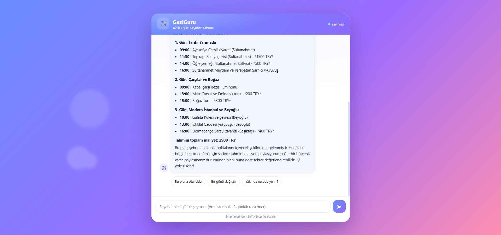

GOOGLE CAPSTONEGeziGuru — Secure Multi-Agent Travel Concierge
Google AI Agents Intensive Capstone projesi: ADK + Gemini ile çok-ajanlı seyahat asistanı. Kendi MCP server'ı (SQLite, 11 araç), canlı web aramasıyla gerçek mekan önerileri ve PII maskeleme + prompt-injection filtresi + zero-trust rezervasyon onaylı 'Privacy Guard' güvenlik katmanı.
Google ADK
Gemini
MCP
FastAPI
Python